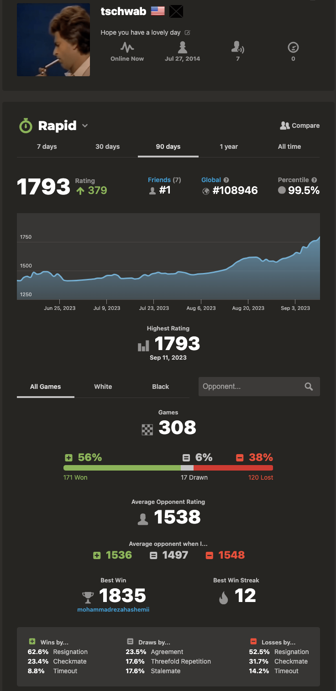

Boring Chess
Posted on November 6, 2023.
Chess has been a core hobby of mine since around 2020 when I began to play during covid. It has been a long run of inconsistent play between the two main websites for online chess lichess.org and chess.com . Between the two I’ve played probably around 3500 games, which if we assume averages at about 10 minutes total, will come out to 583 hours or 24 days of play time. Fortunately for me, I still feel as though I’m improving after such a large amount of time in game, with my peak being early September 2023. That rating was on Chess.com at 1794, in the top .5% of players internationally, nearly in the top 100,000 players. I’m currently floating around mid to low 1600s, just outside the top 1% of players. The difference between 1600 and 1800, while only .5%, is monumental.

What happened in September that pushed my rating to its limits?
I started playing boring chess.
Boring chess — what does that even mean? The layman says all chess is boring, to which the beginning and intermediate players insist on riveting positions. Cutthroat fights for checkmate, large swings in momentum between players. Unsound gambits like The Meitner Mieses or Evans. Greek Gift Sacrifice comes up a lot in this early player “exciting” chess, as do positions that overload the queen, putting her on the frontline to pressure the board.
And what can the layman do other than nod? Those positions are riveting — dripping with aggression. The mere forward queen placement is highly intimidating, and (to the untrained eye) front loaded attacking positions appear to benefit the offensive player. I’ve even heard of cases in classical high level professional games when queen placement is used to offset the opponent, with no tangible threats — simply intimidation.

Let’s be clear though, playing boring chess was not the only thing I did to increase my rating so significantly. It’s not like I was a Meitner Mieses player before that quit the opening cold turkey or some hyper aggressive player that refused to lose a tempo on castling. Another major part of my improvement over the past year has been playing subtle and quiet moves. Moves that do not heavily impact the position that only improve my board state structurally.
My improvement can also be tied to knowing how to play and when. It’s not uncommon to go down a piece and find yourself in a losing position as is the opposite case, when you’re up a piece winning. These pieces may not even be minor pieces like bishops or knights but can even extend to structural sound-ness, or even a simple pawn. Understanding when you’re up or down in a near equal position can help you determine what the best move is. Trading is beneficial when you’re up a minor piece, but up a pawn? That can lead to a small advantage on one side of the board. How can your pieces lean into that advantage and pressure the board that way. On the other hand, going down a piece demands some mature response. You need to understand how to control the speed of the game such that your disadvantage can be minimized. Isolating enemy pieces and finding an aggressive attack in such positions can result in winning positions. If there are enough pieces on the board and your structure is sound enough, then trying to lock into a closed position to time out the opponent is completely viable too.
Resigning in such lost positions is ill advised. Out of my 2,600 Chess.com games, 110 of those are draws. A draw at the 1600 and above level must be pursued rather than a resignation.